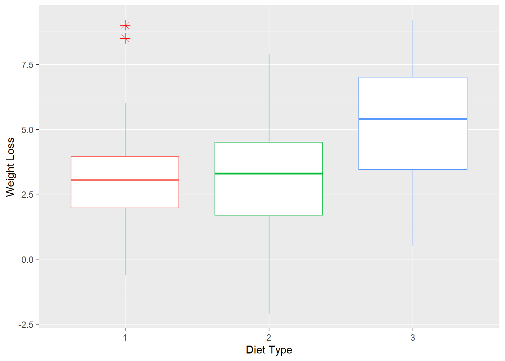
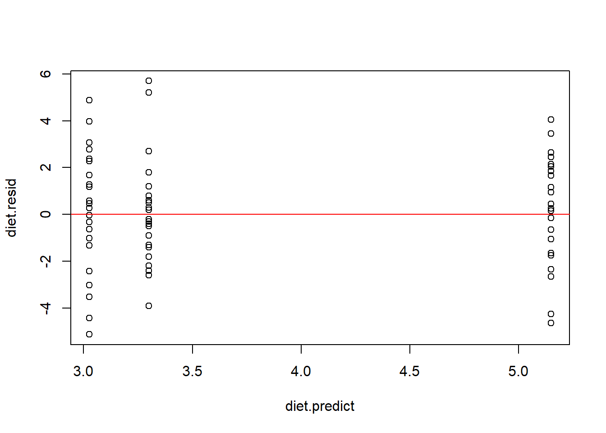
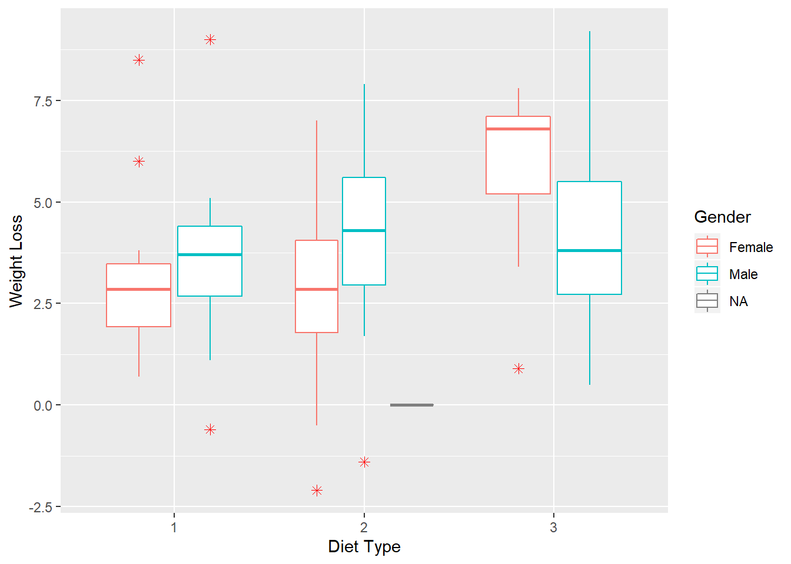
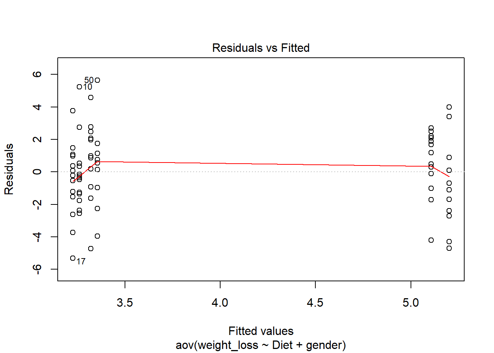
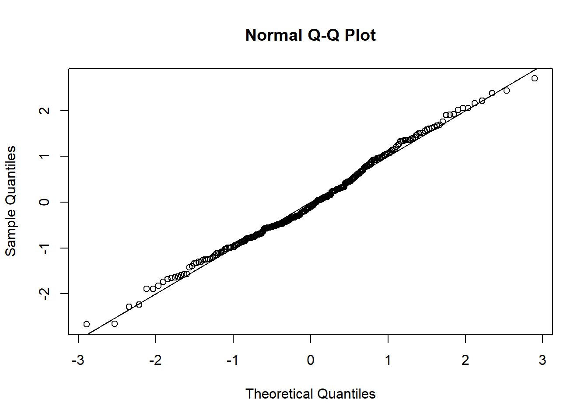
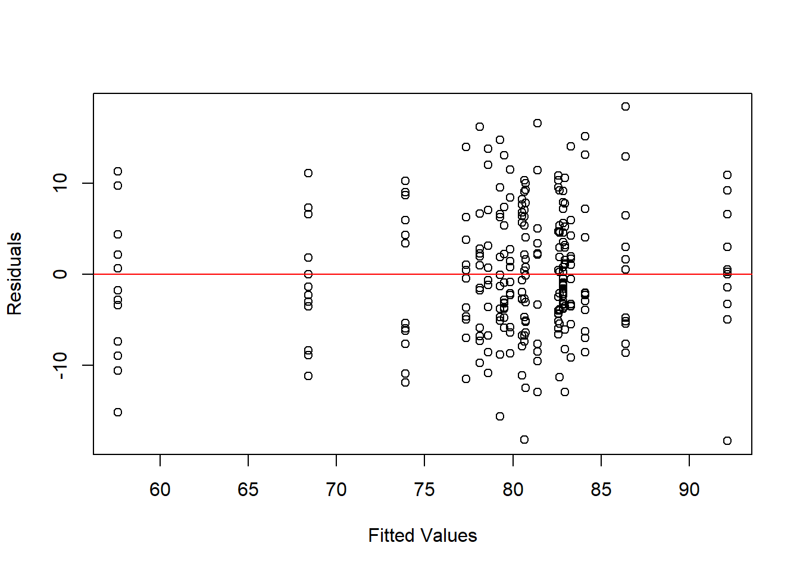
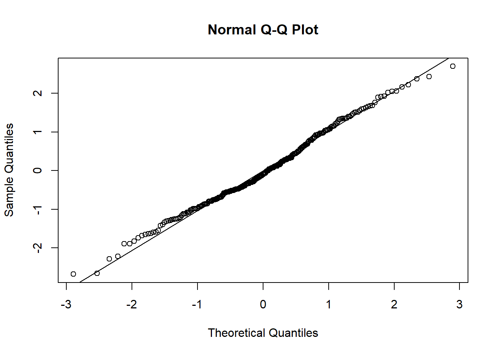

ANOVA
May
2/20/2021
Diet Data Set
This data set contains information on 76 people using one of three diets.
Source link
Format
gender: 1 = male, 0 = femaleAge: Age (years)Height: Height (cm)preweight: Weight before the diet (kg)Diet: Diet Typeweight6weeks- Weight after 6 weeks (kg)
diet = read.csv("datasets/Diet_R.csv")
diet = diet %>% drop_na()
diet$weight_loss = diet$pre.weight - diet$weight6weeks
diet$Diet = factor(diet$Diet)glimpse(diet)## Observations: 76
## Variables: 8
## $ Person <int> 1, 2, 3, 4, 5, 6, 7, 8, 9, 10, 11, 12, 13, 14, 27, 28,...
## $ gender <int> 0, 0, 0, 0, 0, 0, 0, 0, 0, 0, 0, 0, 0, 0, 0, 0, 0, 0, ...
## $ Age <int> 22, 46, 55, 33, 50, 50, 37, 28, 28, 45, 60, 48, 41, 37...
## $ Height <int> 159, 192, 170, 171, 170, 201, 174, 176, 165, 165, 173,...
## $ pre.weight <int> 58, 60, 64, 64, 65, 66, 67, 69, 70, 70, 72, 72, 72, 82...
## $ Diet <fct> 1, 1, 1, 1, 1, 1, 1, 1, 1, 1, 1, 1, 1, 1, 2, 2, 2, 2, ...
## $ weight6weeks <dbl> 54.2, 54.0, 63.3, 61.1, 62.2, 64.0, 65.0, 60.5, 68.1, ...
## $ weight_loss <dbl> 3.8, 6.0, 0.7, 2.9, 2.8, 2.0, 2.0, 8.5, 1.9, 3.1, 1.5,...One-way ANOVA
ggplot(data = diet, aes(x=Diet, y= weight_loss, color=Diet)) +
geom_boxplot(outlier.colour="red", outlier.shape=8,outlier.size=3) +
labs(x="Diet Type", y= "Weight Loss") +
theme(legend.position = "")
Analysis of Variance
diet.aov = aov(weight_loss~Diet,data=diet)
summary(diet.aov)## Df Sum Sq Mean Sq F value Pr(>F)
## Diet 2 60.5 30.264 5.383 0.0066 **
## Residuals 73 410.4 5.622
## ---
## Signif. codes: 0 '***' 0.001 '**' 0.01 '*' 0.05 '.' 0.1 ' ' 1Checking Assumptions
Levin’s test
library(lawstat)
levene.test(diet$weight_loss, diet$Diet, location = "mean")##
## Classical Levene's test based on the absolute deviations from the mean
## ( none not applied because the location is not set to median )
##
## data: diet$weight_loss
## Test Statistic = 0.49392, p-value = 0.6123# manually
# adding column of the group mean of weight loss
diet = diet %>% group_by(Diet) %>% mutate(group_mean = mean(weight_loss))
# adding Z column:
diet$z = abs(diet$weight_loss - diet$group_mean)
aov_equal_var = aov(z~Diet,data=diet)
summary(aov_equal_var)## Df Sum Sq Mean Sq F value Pr(>F)
## Diet 2 2.05 1.027 0.494 0.612
## Residuals 73 151.74 2.079Diagnostic plots
plot(diet.aov)


We can also create these plot manually:
# residudal vs fitted plot:
diet.resid = resid(diet.aov)
diet.predict = predict(diet.aov)
plot(diet.resid~diet.predict)
abline(0,0, col="red")
## qqplot:
qqnorm(diet.resid)
qqline(diet.resid)
Post-hoc analysis
Estimated Expectations
tapply(X = diet$weight_loss, INDEX = diet$Diet, FUN = mean )## 1 2 3
## 3.300000 3.268000 5.148148Finding which group is different from all other groups
?????
Pairwise Comparisons
Regular (No multiple correction)
library(multcomp)contr = rbind(
"2 - 1" = c(-1,1,0),
"3 - 1" = c(-1,0,1),
"3 - 2" = c(0,-1,1)
)
### set up general linear hypothesis
pairwise_res = glht(diet.aov, linfct = mcp(Diet = contr))
summary(pairwise_res)##
## Simultaneous Tests for General Linear Hypotheses
##
## Multiple Comparisons of Means: User-defined Contrasts
##
##
## Fit: aov(formula = weight_loss ~ Diet, data = diet)
##
## Linear Hypotheses:
## Estimate Std. Error t value Pr(>|t|)
## 2 - 1 == 0 -0.0320 0.6776 -0.047 0.9988
## 3 - 1 == 0 1.8481 0.6652 2.778 0.0189 *
## 3 - 2 == 0 1.8801 0.6581 2.857 0.0152 *
## ---
## Signif. codes: 0 '***' 0.001 '**' 0.01 '*' 0.05 '.' 0.1 ' ' 1
## (Adjusted p values reported -- single-step method)# calpha = univariate_calpha() - without correction
pairwise_ci = confint(pairwise_res, calpha = univariate_calpha())
pairwise_ci##
## Simultaneous Confidence Intervals
##
## Multiple Comparisons of Means: User-defined Contrasts
##
##
## Fit: aov(formula = weight_loss ~ Diet, data = diet)
##
## Quantile = 1.993
## 95% confidence level
##
##
## Linear Hypotheses:
## Estimate lwr upr
## 2 - 1 == 0 -0.0320 -1.3824 1.3184
## 3 - 1 == 0 1.8481 0.5224 3.1739
## 3 - 2 == 0 1.8801 0.5686 3.1917plot(pairwise_ci, xlab = "Weight loss diff")
Bonferroni Correction
summary(pairwise_res, test = adjusted(type = 'bonf'))##
## Simultaneous Tests for General Linear Hypotheses
##
## Multiple Comparisons of Means: User-defined Contrasts
##
##
## Fit: aov(formula = weight_loss ~ Diet, data = diet)
##
## Linear Hypotheses:
## Estimate Std. Error t value Pr(>|t|)
## 2 - 1 == 0 -0.0320 0.6776 -0.047 1.0000
## 3 - 1 == 0 1.8481 0.6652 2.778 0.0208 *
## 3 - 2 == 0 1.8801 0.6581 2.857 0.0167 *
## ---
## Signif. codes: 0 '***' 0.001 '**' 0.01 '*' 0.05 '.' 0.1 ' ' 1
## (Adjusted p values reported -- bonferroni method)alpha = 0.05 ; m = 3
pairwise_ci_bonferroni = confint(pairwise_res, level = 1- (alpha/m) , calpha = univariate_calpha())
pairwise_ci_bonferroni##
## Simultaneous Confidence Intervals
##
## Multiple Comparisons of Means: User-defined Contrasts
##
##
## Fit: aov(formula = weight_loss ~ Diet, data = diet)
##
## Quantile = 2.4504
## 98.3333333333333% confidence level
##
##
## Linear Hypotheses:
## Estimate lwr upr
## 2 - 1 == 0 -0.0320 -1.6924 1.6284
## 3 - 1 == 0 1.8481 0.2182 3.4781
## 3 - 2 == 0 1.8801 0.2675 3.4928plot(pairwise_ci_bonferroni)
Tukey’s Method
pairwise_res_tukey = glht(diet.aov, linfct = mcp(Diet = "Tukey"))
pairwise_ci_tukey = confint(pairwise_res_tukey)
pairwise_ci_tukey##
## Simultaneous Confidence Intervals
##
## Multiple Comparisons of Means: Tukey Contrasts
##
##
## Fit: aov(formula = weight_loss ~ Diet, data = diet)
##
## Quantile = 2.394
## 95% family-wise confidence level
##
##
## Linear Hypotheses:
## Estimate lwr upr
## 2 - 1 == 0 -0.0320 -1.6541 1.5901
## 3 - 1 == 0 1.8481 0.2557 3.4406
## 3 - 2 == 0 1.8801 0.3047 3.4556plot(pairwise_ci_tukey, xlab = "Weight loss diff")
Multiple Comparisons
Prespecified Comparison
Any Other Idea???
\[ H_0: \frac{\alpha_1+\alpha_2}{2}-\alpha_3=0 \leftrightarrow \frac{\mu_1 + \mu_2}{2} - \mu_3 = 0 \]
contr1 = (c(1/2,1/2,-1))
glht_test = glht(diet.aov, linfct = mcp(Diet = contr1))
summary(glht_test)##
## Simultaneous Tests for General Linear Hypotheses
##
## Multiple Comparisons of Means: User-defined Contrasts
##
##
## Fit: aov(formula = weight_loss ~ Diet, data = diet)
##
## Linear Hypotheses:
## Estimate Std. Error t value Pr(>|t|)
## 1 == 0 -1.8641 0.5683 -3.28 0.00159 **
## ---
## Signif. codes: 0 '***' 0.001 '**' 0.01 '*' 0.05 '.' 0.1 ' ' 1
## (Adjusted p values reported -- single-step method)# other option:
lvls = data.frame(diet_type = unique(diet$Diet))
X = model.matrix(~ diet_type , data = lvls)
summary( glht(diet.aov, linfct = contr1 %*% X ))##
## Simultaneous Tests for General Linear Hypotheses
##
## Fit: aov(formula = weight_loss ~ Diet, data = diet)
##
## Linear Hypotheses:
## Estimate Std. Error t value Pr(>|t|)
## 1 == 0 -1.8641 0.5683 -3.28 0.00159 **
## ---
## Signif. codes: 0 '***' 0.001 '**' 0.01 '*' 0.05 '.' 0.1 ' ' 1
## (Adjusted p values reported -- single-step method)Scheffe Method
Any Other Idea???
library(DescTools)
ScheffeTest(diet.aov , contrasts = contr1,
conf.level = 0.95) ##
## Posthoc multiple comparisons of means: Scheffe Test
## 95% family-wise confidence level
##
## $Diet
## diff lwr.ci upr.ci pval
## 1,2-3 -1.864148 -3.28432 -0.4439765 0.0066 **
##
## ---
## Signif. codes: 0 '***' 0.001 '**' 0.01 '*' 0.05 '.' 0.1 ' ' 1Two-way ANOVA
Effect of diet and gender on weight lost
Gender:
1- male, 0 - female
diet$gender = factor(diet$gender)
ggplot(data = diet, aes(x=Diet, y= weight_loss, color=gender)) +
geom_boxplot(outlier.colour="red", outlier.shape=8,outlier.size=2) +
labs(x="Diet Type", y= "Weight Loss") +
scale_color_discrete(name = "Gender", labels = c("Female", "Male"))
diet.aov2 = aov( weight_loss~Diet + gender ,data=diet)
summary(diet.aov2) ## Df Sum Sq Mean Sq F value Pr(>F)
## Diet 2 60.5 30.264 5.312 0.00705 **
## gender 1 0.2 0.169 0.030 0.86387
## Residuals 72 410.2 5.698
## ---
## Signif. codes: 0 '***' 0.001 '**' 0.01 '*' 0.05 '.' 0.1 ' ' 1plot(diet.aov2)


Intercations
diet.aov2_intr = aov( weight_loss~Diet * gender ,data=diet)
summary(diet.aov2_intr) ## Df Sum Sq Mean Sq F value Pr(>F)
## Diet 2 60.5 30.264 5.629 0.00541 **
## gender 1 0.2 0.169 0.031 0.85991
## Diet:gender 2 33.9 16.952 3.153 0.04884 *
## Residuals 70 376.3 5.376
## ---
## Signif. codes: 0 '***' 0.001 '**' 0.01 '*' 0.05 '.' 0.1 ' ' 1Interaction Plot
interaction.plot(x.factor = diet$Diet,
trace.factor = diet$gender,
response = diet$weight_loss,
fun = mean,
type = "b", legend = TRUE,
xlab = "Diet", ylab="Weight Loss",
trace.label = "Gender",
pch=c(1,8), col = c("#FF6347", "#3CB371"))plot(diet.aov2_intr)


Interaction Plots Examples
Invented example:
Ranking of movies from different genres by women and men.
No interaction
set.seed(22)
group <- gl(n = 2, k = 20, labels = c("Female","Male"))
trt <- rep(rep(c("Adventure","Comedy"), each=10),2)
resp <- c(
rnorm(n = 20, mean = rep(c(3.60,3.65), each = 10), sd = .01),
rnorm(n = 20, mean = rep(c(3.62,3.67), each = 10), sd = .01)
)
df1 <- data.frame(group, trt, resp)
interaction.plot(x.factor = df1$trt,
trace.factor = df1$group,
response = df1$resp,
type = "b", legend = TRUE,
xlab = "Genre", ylab="Movie Rating",
trace.label = "Gender",
pch=c(1,8), col = c("#FF6347", "#3CB371") )
with interaction
set.seed(22)
group <- gl(n = 2, k = 20, labels = c("Female","Male"))
trt <- rep(rep(c("Sci-fi","Romance"), each=10),2)
resp <- c(
rnorm(n = 20, mean = rep(c(3.60,3.65), each = 10), sd = .01),
rnorm(n = 20, mean = rep(c(3.65,3.60), each = 10), sd = .01)
)
df2 <- data.frame(group, trt, resp)
interaction.plot(x.factor = df2$trt,
trace.factor = df2$group,
response = df2$resp,
type = "b", legend = TRUE,
xlab = "Genre", ylab="Movie Rating",
trace.label = "Gender",
pch=c(1,8), col = c("#FF6347", "#3CB371") )set.seed(22)
trt <- rep(rep(c("Romantic Comedy", "Musicals"), each=10),2)
resp <- c(
rnorm(n = 20, mean = rep(c(3.25,3.17), each = 10), sd = .01),
rnorm(n = 20, mean = rep(c(3.10,3.13), each = 10), sd = .01)
)
df3 <- data.frame(group, trt, resp)
interaction.plot(x.factor = df3$trt,
trace.factor = df3$group,
response = df3$resp,
type = "b", legend = TRUE,
xlab = "Genre", ylab="Movie Rating",
trace.label = "Gender",
pch=c(1,8), col = c("#FF6347", "#3CB371") )Ricci: Firefighter Promotion Exam Scores Dataset
Details
The city of New Haven, Connecticut administered exams (both written and oral) in November and December of 2003 to firefighters hoping to qualify for promotion to either Lieutenant or Captain in the city fire department. A final score consisting of a 60% weight for the written exam and a 40% weight for the oral exam was computed for each person who took the exam. For each person who took the exams, there are measurements on their race (black, white, or Hispanic), which position they were trying for (Lieutenant, Captain), scores on the oral and written exams, and the combined score. These data were used as part of a court case (Ricci v.DeStefano) dealing with racial discrimination
Source
An article on using these data: Miao, W. (2011) “Did the Results of Promotion Exams Have a Disparate Impact on Minorities? Using Statistical Evidence in Ricci v. DeStefano,” JSE 19:1 at link
Format
Race: Race of firefighter (B=black, H=Hispanic, or W=white)Position: Promotion desired (Captain or Lieutenant)Oral: Oral exam scoreWritten: Written exam scoreCombine: Combined score (written exam gets 60% weight)
library(Stat2Data)
data(Ricci)
glimpse(Ricci)## Observations: 118
## Variables: 5
## $ Race <fct> W, W, W, W, W, H, W, H, W, W, W, W, H, W, W, B, W, W, B, W...
## $ Position <fct> Captain, Captain, Captain, Captain, Captain, Captain, Capt...
## $ Oral <dbl> 89.52, 80.00, 82.38, 88.57, 76.19, 76.19, 76.19, 70.00, 73...
## $ Written <int> 95, 95, 87, 76, 84, 82, 82, 84, 81, 72, 69, 74, 74, 77, 74...
## $ Combine <dbl> 92.808, 89.000, 85.152, 81.028, 80.876, 79.676, 79.676, 78...ggplot(data = Ricci,
aes(x=Race, y= Combine, color=Position)) +
geom_boxplot(outlier.colour="red", outlier.shape=8,outlier.size=3) +
labs(x="Race", y= "Combined score") 
One-way ANOVA
Option 1
aov_captain = aov(Combine ~ Race , data = Ricci %>% filter(Position == "Captain"))
summary(aov_captain)## Df Sum Sq Mean Sq F value Pr(>F)
## Race 2 707.2 353.6 5.034 0.0115 *
## Residuals 38 2669.1 70.2
## ---
## Signif. codes: 0 '***' 0.001 '**' 0.01 '*' 0.05 '.' 0.1 ' ' 1Tuke’s 95% CI’s
ricci_capt_tukey = glht(aov_captain, linfct = mcp(Race = "Tukey"))
ricci_capt_ci_tukey = confint(ricci_capt_tukey)
ricci_capt_ci_tukey##
## Simultaneous Confidence Intervals
##
## Multiple Comparisons of Means: Tukey Contrasts
##
##
## Fit: aov(formula = Combine ~ Race, data = Ricci %>% filter(Position ==
## "Captain"))
##
## Quantile = 2.4304
## 95% family-wise confidence level
##
##
## Linear Hypotheses:
## Estimate lwr upr
## H - B == 0 4.7645 -5.4200 14.9490
## W - B == 0 10.3308 2.0569 18.6047
## W - H == 0 5.5663 -2.7076 13.8402plot(ricci_capt_ci_tukey, xlab = "score diff")
Option 2
aov_lieutenant = aov(Combine ~ Race , data = Ricci %>% filter(Position == "Lieutenant"))
summary(aov_lieutenant)## Df Sum Sq Mean Sq F value Pr(>F)
## Race 2 1266 633.2 8.579 0.000446 ***
## Residuals 74 5462 73.8
## ---
## Signif. codes: 0 '***' 0.001 '**' 0.01 '*' 0.05 '.' 0.1 ' ' 1ricci_lie_tukey = glht(aov_lieutenant, linfct = mcp(Race = "Tukey"))
ricci_lie_ci_tukey = confint(ricci_lie_tukey)
ricci_lie_ci_tukey##
## Simultaneous Confidence Intervals
##
## Multiple Comparisons of Means: Tukey Contrasts
##
##
## Fit: aov(formula = Combine ~ Race, data = Ricci %>% filter(Position ==
## "Lieutenant"))
##
## Quantile = 2.3854
## 95% family-wise confidence level
##
##
## Linear Hypotheses:
## Estimate lwr upr
## H - B == 0 -0.09273 -7.17116 6.98570
## W - B == 0 8.12599 2.48046 13.77152
## W - H == 0 8.21872 2.07327 14.36418plot(ricci_lie_ci_tukey, xlab = "score diff")Two-way ANOVA
summary(aov(Combine ~ Race*Position , data = Ricci))## Df Sum Sq Mean Sq F value Pr(>F)
## Race 2 1972 985.8 13.579 5.25e-06 ***
## Position 1 144 143.9 1.981 0.162
## Race:Position 2 64 32.0 0.441 0.645
## Residuals 112 8131 72.6
## ---
## Signif. codes: 0 '***' 0.001 '**' 0.01 '*' 0.05 '.' 0.1 ' ' 1# interaction plot
interaction.plot(x.factor = Ricci$Race,
trace.factor = Ricci$Position,
response = Ricci$Combine,
fun = mean,
type = "b", legend = TRUE,
xlab = "Race", ylab="Combine Score",
trace.label = "Position",
pch=c(1,8), col = c("#FF6347", "#3CB371"))
interaction.plot(x.factor = Ricci$Position,
trace.factor = Ricci$Race,
response = Ricci$Combine,
fun = mean,
type = "b", legend = TRUE,
xlab = "Position", ylab="Combine Score",
trace.label = "Race",
pch=c(1,8, 3), col = c("#FF6347", "#3CB371","#2980B9" ))
One-factor-at-a-time
Example:
res_s = c(13, 24, 18, 16 ,14, 27, 30, 14, 14)
df = cbind(expand.grid(Treatment_1 = c("none", "low", "high"),
Treatment_2 = c("none", "low", "high")), y_exp =res_s)
ggplot(data = df, aes(x=Treatment_1, y = Treatment_2, size = y_exp, color = factor(y_exp))) +
geom_point() + scale_size(guide = "none") + guides(color=guide_legend(title="E[Y]")) +
labs(x= "Treatment 1", y= "Treatment 2") + theme_bw() 
Mixed Effect Model
Positive Negative Feedback
The effects of positive and negative verbal feedback on repeated force production
pos_neg_df = read.csv("datasets/pos_neg_feedback.csv")glimpse(pos_neg_df)## Observations: 22
## Variables: 40
## $ gender <int> 1, 1, 1, 1, 1, 1, 1, 1, 1, 1, 1, 2, 2, 2, 2, 2, 2, 2, 2, 2, ...
## $ neg1 <dbl> 92.38054, 90.20690, 88.86179, 62.48928, 88.26729, 97.04653, ...
## $ neg2 <dbl> 93.15540, 84.82759, 97.64228, 86.00859, 91.29759, 102.47980,...
## $ neg3 <dbl> 93.58588, 84.62069, 91.30081, 78.62662, 91.37529, 112.76121,...
## $ neg4 <dbl> 90.48644, 83.31035, 92.11382, 83.69100, 88.18959, 100.64085,...
## $ neg5 <dbl> 87.12871, 77.58621, 96.74797, 79.57083, 91.91919, 101.97827,...
## $ neg6 <dbl> 90.22815, 78.89655, 95.52846, 75.53649, 91.53069, 103.73363,...
## $ neg7 <dbl> 84.28756, 76.68966, 84.47154, 92.87555, 95.02720, 104.56952,...
## $ neg8 <dbl> 84.28756, 76.75862, 82.68293, 103.26182, 86.94639, 93.03427,...
## $ neg9 <dbl> 87.64529, 77.31035, 80.81301, 103.43349, 86.86869, 92.86710,...
## $ neg10 <dbl> 81.18812, 76.34483, 89.67480, 101.63091, 85.47009, 81.66620,...
## $ neg11 <dbl> 77.91649, 76.62069, 77.39837, 79.91417, 83.52758, 73.14015, ...
## $ neg12 <dbl> 79.81059, 78.00000, 78.94309, 76.39486, 88.42269, 83.50515, ...
## $ pos1 <dbl> 105.38448, 78.77009, 92.34828, 96.20753, 91.22363, 82.05591,...
## $ pos2 <dbl> 105.20510, 82.52105, 86.09122, 100.66748, 91.05485, 72.79832...
## $ pos3 <dbl> 100.54128, 74.94259, 91.21749, 93.75000, 87.25739, 80.25248,...
## $ pos4 <dbl> 98.20937, 78.61700, 86.24199, 84.73908, 85.99156, 74.36129, ...
## $ pos5 <dbl> 97.13310, 80.83695, 91.06671, 88.46364, 79.57806, 71.35557, ...
## $ pos6 <dbl> 97.04341, 78.38735, 87.90049, 86.19539, 79.66245, 71.66093, ...
## $ pos7 <dbl> 88.61265, 70.42613, 80.06031, 98.39199, 80.50633, 68.95101, ...
## $ pos8 <dbl> 88.07451, 73.33503, 72.52167, 92.38471, 79.40928, 69.07124, ...
## $ pos9 <dbl> 88.16421, 67.21102, 77.57256, 99.75728, 78.14346, 70.33363, ...
## $ pos10 <dbl> 78.74687, 68.20617, 69.58160, 92.83981, 75.02110, 66.90712, ...
## $ pos11 <dbl> 84.21789, 69.12478, 79.15567, 97.39078, 74.09283, 66.18575, ...
## $ pos12 <dbl> 85.56323, 63.30697, 75.38636, 82.28155, 73.08017, 65.58461, ...
## $ con1 <dbl> 91.01424, 88.45564, 94.08738, 67.36760, 99.31319, 90.01440, ...
## $ con2 <dbl> 89.76870, 90.03286, 85.59922, 68.92523, 97.25275, 90.73452, ...
## $ con3 <dbl> 87.72243, 87.40416, 88.82109, 61.99377, 91.31868, 75.61210, ...
## $ con4 <dbl> 87.01069, 83.65827, 85.89212, 54.82866, 88.18681, 88.57417, ...
## $ con5 <dbl> 86.03204, 83.13253, 81.20576, 48.67601, 82.08791, 84.75756, ...
## $ con6 <dbl> 75.97866, 79.51807, 75.49426, 59.73520, 82.00549, 80.58089, ...
## $ con7 <dbl> 82.82919, 81.75247, 74.17623, 58.25545, 80.19231, 81.51704, ...
## $ con8 <dbl> 81.04983, 81.81818, 74.61557, 47.04050, 81.84133, 74.31589, ...
## $ con9 <dbl> 73.93239, 81.29244, 79.22871, 50.23365, 77.88462, 77.62842, ...
## $ con10 <dbl> 78.02492, 80.66247, 77.98389, 42.44548, 81.18132, 82.38118, ...
## $ con11 <dbl> 73.30962, 80.50384, 70.44179, 54.20561, 75.57692, 68.26692, ...
## $ con12 <dbl> 62.54449, 79.12377, 63.70222, 55.84112, 77.14286, 75.46807, ...
## $ negall <dbl> 86.11279, 78.56552, 86.14634, 86.88413, 89.74359, 97.06325, ...
## $ posall <dbl> 91.73383, 72.50829, 83.81455, 95.55074, 79.91561, 71.41569, ...
## $ conall <dbl> 80.76513, 82.81709, 78.77471, 54.67290, 81.41209, 77.55641, ...neg_long = pos_neg_df %>% mutate("id"= row_number()) %>%
select( neg1:neg12, id, gender) %>%
pivot_longer(cols = neg1:neg12, values_to = "performance", names_to = "time") %>%
mutate_at("time", ~(str_extract(., pattern = "[0-9]+"))) %>%
mutate(feedback = "negative")
pos_long = pos_neg_df %>% mutate("id"= row_number()) %>%
select( pos1:pos12, id, gender) %>%
pivot_longer(cols = pos1:pos12, values_to = "performance", names_to = "time") %>%
mutate_at("time", ~(str_extract(., pattern = "[0-9]+"))) %>%
mutate(feedback = "positive")
con_long = pos_neg_df %>% mutate("id"= row_number()) %>%
select( con1:con12, id, gender) %>%
pivot_longer(cols = con1:con12, values_to = "performance", names_to = "time") %>%
mutate_at("time", ~(str_extract(., pattern = "[0-9]+"))) %>%
mutate(feedback = "no feedback")
feedback_long_df = neg_long %>% bind_rows(pos_long) %>% bind_rows(con_long)
# write_csv(feedback_long_df, "datasets/feedback_long_df.csv")feedback_long_df = read_csv("datasets/feedback_long_df.csv")
head(feedback_long_df)## # A tibble: 6 x 5
## id gender time performance feedback
## <dbl> <dbl> <dbl> <dbl> <chr>
## 1 1 1 1 92.4 negative
## 2 1 1 2 93.2 negative
## 3 1 1 3 93.6 negative
## 4 1 1 4 90.5 negative
## 5 1 1 5 87.1 negative
## 6 1 1 6 90.2 negativefeedback_long_df = feedback_long_df %>% mutate_at(vars(id, gender, feedback), factor) %>% mutate_at("time", as.integer)let’s take a look:
feedback_long_df %>% group_by(id, feedback) %>%
summarise(mean_per = mean(performance)) %>%
ggplot(aes(x=feedback , y=mean_per, color = feedback)) +
geom_boxplot() + theme(legend.position = "") +
labs(title = "Boxplots of Average Relative Performance by Feedback" , y = "Average Relative Performance")
feedback_long_df %>%
ggplot(aes(x=feedback , y=performance, color = feedback)) +
geom_boxplot() + theme(legend.position = "") +
labs(title = "Boxplots of Relative Performance by Feedback" , y = "Relative Performance")
feedback_long_df %>% group_by(id, feedback, gender) %>%
summarise(mean_per = mean(performance)) %>%
ggplot(aes(x=feedback , y=mean_per, color = gender)) +
geom_boxplot() +
labs(title = "Boxplots of Average Relative Performance by Feedback" , y = "Average Relative Performance")
feedback_long_df %>%
ggplot(aes(x=feedback , y=performance, color = gender)) +
geom_boxplot() +
labs(title = "Boxplots of Relative Performance by Feedback" , y = " Relative Performance")# feedback_long_df %>% group_by(feedback, time) %>% summarise(mean_perf = mean(performance) %>%)
# ggplot(aes(x=factor(time) , y=performance, color = id, group = id)) +
# geom_point() +
# geom_line() +
# labs(title = "Boxplots of Average Relative Performance by Feedback" , y = "Average Relative Performance")feedback_long_df %>% group_by(feedback, time) %>% summarise(mean_perf = mean(performance)) %>%
ggplot(aes(x=factor(time) , y=mean_perf, color = feedback, group = feedback)) +
geom_point() +
geom_line(alpha=.5, size = 1.5) +
labs(title = "Average Relative Performance by Feedback & Time" ,
x = "Repetitions" , y = "Average Relative Performance")
feedback_long_df %>% group_by(feedback, time, gender) %>% summarise(mean_perf = mean(performance)) %>%
ggplot(aes(x=factor(time) , y=mean_perf, color = feedback, group = feedback)) +
geom_point() +
geom_line(alpha=.5, size = 1.5) +
facet_wrap(~gender) + theme(legend.position = "bottom") +
labs(title = "Average Relative Performance by Feedback & Time" , subtitle = "Facet by gender",
x = "Repetitions" , y = "Average Relative Performance")
Analysis
library("lmerTest")One-way
let’s filter only control group: feedback == “no feedback”
nofeed_df = feedback_long_df[(feedback_long_df$feedback=="no feedback"),]
feed_fit.1 =lmer(performance ~ (1 | id) , data = nofeed_df )summary(feed_fit.1)## Linear mixed model fit by REML. t-tests use Satterthwaite's method [
## lmerModLmerTest]
## Formula: performance ~ (1 | id)
## Data: nofeed_df
##
## REML criterion at convergence: 1836.1
##
## Scaled residuals:
## Min 1Q Median 3Q Max
## -2.56607 -0.66845 -0.09021 0.66234 2.60035
##
## Random effects:
## Groups Name Variance Std.Dev.
## id (Intercept) 48.42 6.958
## Residual 50.43 7.101
## Number of obs: 264, groups: id, 22
##
## Fixed effects:
## Estimate Std. Error df t value Pr(>|t|)
## (Intercept) 79.807 1.547 21.000 51.6 <2e-16 ***
## ---
## Signif. codes: 0 '***' 0.001 '**' 0.01 '*' 0.05 '.' 0.1 ' ' 1confint(feed_fit.1, oldNames=FALSE)## Computing profile confidence intervals ...## 2.5 % 97.5 %
## sd_(Intercept)|id 5.010525 9.619382
## sigma 6.512773 7.784242
## (Intercept) 76.711722 82.902944Checking Assumptions
feed_fit.1.resid = resid(feed_fit.1)
feed_fit.1.predict = predict(feed_fit.1)
plot(feed_fit.1.predict,feed_fit.1.resid, xlab = "Fitted Values", ylab = "Residuals")
abline(0,0, col = "red")
qqnorm(feed_fit.1.resid)
qqline(feed_fit.1.resid)We can also get “estimates” (conditional means) of the random effects \(a_i\) with the function ranef:
qqnorm(ranef(feed_fit.1)$id[, "(Intercept)"], main = "Random effects")
qqline(ranef(feed_fit.1)$id[, "(Intercept)"])
Two-way
Option 1
We will continue with the data for the control group only and add a fixed effect to gender:
feed_fit.2 = lmer(performance ~ gender + (1 | id) , data = nofeed_df )
anova(feed_fit.2)## Type III Analysis of Variance Table with Satterthwaite's method
## Sum Sq Mean Sq NumDF DenDF F value Pr(>F)
## gender 2.5789 2.5789 1 20 0.0511 0.8234summary(feed_fit.2)## Linear mixed model fit by REML. t-tests use Satterthwaite's method [
## lmerModLmerTest]
## Formula: performance ~ gender + (1 | id)
## Data: nofeed_df
##
## REML criterion at convergence: 1832
##
## Scaled residuals:
## Min 1Q Median 3Q Max
## -2.57669 -0.67304 -0.09008 0.66272 2.59291
##
## Random effects:
## Groups Name Variance Std.Dev.
## id (Intercept) 50.91 7.135
## Residual 50.43 7.101
## Number of obs: 264, groups: id, 22
##
## Fixed effects:
## Estimate Std. Error df t value Pr(>|t|)
## (Intercept) 79.4494 2.2383 19.9999 35.495 <2e-16 ***
## gender2 0.7158 3.1655 19.9999 0.226 0.823
## ---
## Signif. codes: 0 '***' 0.001 '**' 0.01 '*' 0.05 '.' 0.1 ' ' 1
##
## Correlation of Fixed Effects:
## (Intr)
## gender2 -0.707confint(feed_fit.2, oldNames=FALSE)## Computing profile confidence intervals ...## 2.5 % 97.5 %
## sd_(Intercept)|id 5.003073 9.606553
## sigma 6.512776 7.784244
## (Intercept) 75.077149 83.821680
## gender2 -5.467481 6.899154Checking Assumptions
resid_plot = function(model) {
model.resid = resid(model)
model.predict = predict(model)
plot(model.predict,model.resid, xlab = "Fitted Values", ylab = "Residuals")
abline(0,0, col = "red")
}
qq_plot = function(model) {
model.resid = resid(model)
qqnorm(model.resid)
qqline(model.resid)
}
resid_plot(feed_fit.2)
qq_plot(feed_fit.2)
qqnorm(ranef(feed_fit.2)$id[, "(Intercept)"], main = "Random effects")
qqline(ranef(feed_fit.2)$id[, "(Intercept)"])
Option 2
feed_fit.3 = lmer(performance ~ feedback + (1 | id) , data = feedback_long_df)
anova(feed_fit.3)## Type III Analysis of Variance Table with Satterthwaite's method
## Sum Sq Mean Sq NumDF DenDF F value Pr(>F)
## feedback 6474 3237 2 768 36.765 5.651e-16 ***
## ---
## Signif. codes: 0 '***' 0.001 '**' 0.01 '*' 0.05 '.' 0.1 ' ' 1summary(feed_fit.3)## Linear mixed model fit by REML. t-tests use Satterthwaite's method [
## lmerModLmerTest]
## Formula: performance ~ feedback + (1 | id)
## Data: feedback_long_df
##
## REML criterion at convergence: 5818.7
##
## Scaled residuals:
## Min 1Q Median 3Q Max
## -3.5559 -0.6465 -0.0246 0.6743 3.0531
##
## Random effects:
## Groups Name Variance Std.Dev.
## id (Intercept) 7.692 2.773
## Residual 88.046 9.383
## Number of obs: 792, groups: id, 22
##
## Fixed effects:
## Estimate Std. Error df t value Pr(>|t|)
## (Intercept) 86.8032 0.8265 45.8612 105.021 < 2e-16 ***
## feedbackno feedback -6.9958 0.8167 768.0000 -8.566 < 2e-16 ***
## feedbackpositive -3.7771 0.8167 768.0000 -4.625 4.4e-06 ***
## ---
## Signif. codes: 0 '***' 0.001 '**' 0.01 '*' 0.05 '.' 0.1 ' ' 1
##
## Correlation of Fixed Effects:
## (Intr) fdbckf
## fdbcknfdbck -0.494
## feedbckpstv -0.494 0.500confint(feed_fit.3, oldNames=FALSE)## Computing profile confidence intervals ...## 2.5 % 97.5 %
## sd_(Intercept)|id 1.788906 4.024842
## sigma 8.921857 9.859356
## (Intercept) 85.175738 88.430565
## feedbackno feedback -8.596459 -5.395179
## feedbackpositive -5.377742 -2.176461Checking Assumptions
resid_plot(feed_fit.3)
qq_plot(feed_fit.3)
qqnorm(ranef(feed_fit.3)$id[, "(Intercept)"], main = "Random effects")
qqline(ranef(feed_fit.3)$id[, "(Intercept)"])
Option 3
ggplot(feedback_long_df, aes(x = gender, y = performance, group = feedback, col = feedback)) +
stat_summary(fun.y = mean, geom = "line", size = 1.5) +
labs(x= "Gender", y="Relative Performance")ggplot(feedback_long_df, aes(x = feedback, y = performance, group = gender, col = gender)) +
stat_summary(fun.y = mean, geom = "line", size = 1.5) +
labs(x= "Feedback", y="Relative Performance")
feed_fit.4 = lmer(performance ~ feedback + gender + feedback * gender + (1 | id) , data = feedback_long_df)
anova(feed_fit.4)## Type III Analysis of Variance Table with Satterthwaite's method
## Sum Sq Mean Sq NumDF DenDF F value Pr(>F)
## feedback 6474.0 3237.0 2 766 36.9555 4.767e-16 ***
## gender 121.5 121.5 1 20 1.3869 0.25276
## feedback:gender 524.3 262.2 2 766 2.9930 0.05072 .
## ---
## Signif. codes: 0 '***' 0.001 '**' 0.01 '*' 0.05 '.' 0.1 ' ' 1summary(feed_fit.4)## Linear mixed model fit by REML. t-tests use Satterthwaite's method [
## lmerModLmerTest]
## Formula: performance ~ feedback + gender + feedback * gender + (1 | id)
## Data: feedback_long_df
##
## REML criterion at convergence: 5803.6
##
## Scaled residuals:
## Min 1Q Median 3Q Max
## -3.4647 -0.6454 0.0022 0.6514 3.1460
##
## Random effects:
## Groups Name Variance Std.Dev.
## id (Intercept) 7.522 2.743
## Residual 87.592 9.359
## Number of obs: 792, groups: id, 22
##
## Fixed effects:
## Estimate Std. Error df t value Pr(>|t|)
## (Intercept) 88.2024 1.1608 44.0579 75.987 < 2e-16 ***
## feedbackno feedback -8.7530 1.1520 766.0000 -7.598 8.79e-14 ***
## feedbackpositive -3.8412 1.1520 766.0000 -3.334 0.000896 ***
## gender2 -2.7986 1.6416 44.0579 -1.705 0.095270 .
## feedbackno feedback:gender2 3.5144 1.6292 766.0000 2.157 0.031306 *
## feedbackpositive:gender2 0.1283 1.6292 766.0000 0.079 0.937270
## ---
## Signif. codes: 0 '***' 0.001 '**' 0.01 '*' 0.05 '.' 0.1 ' ' 1
##
## Correlation of Fixed Effects:
## (Intr) fdbckf fdbckp gendr2 ffdb:2
## fdbcknfdbck -0.496
## feedbckpstv -0.496 0.500
## gender2 -0.707 0.351 0.351
## ffdbck:gnd2 0.351 -0.707 -0.354 -0.496
## fdbckpstv:2 0.351 -0.354 -0.707 -0.496 0.500feedback_long_df## # A tibble: 792 x 5
## id gender time performance feedback
## <fct> <fct> <int> <dbl> <fct>
## 1 1 1 1 92.4 negative
## 2 1 1 2 93.2 negative
## 3 1 1 3 93.6 negative
## 4 1 1 4 90.5 negative
## 5 1 1 5 87.1 negative
## 6 1 1 6 90.2 negative
## 7 1 1 7 84.3 negative
## 8 1 1 8 84.3 negative
## 9 1 1 9 87.6 negative
## 10 1 1 10 81.2 negative
## # ... with 782 more rowsChecking Assumptions
resid_plot(feed_fit.4)
qq_plot(feed_fit.4)
qqnorm(ranef(feed_fit.4)$id[, "(Intercept)"], main = "Random effects")
qqline(ranef(feed_fit.4)$id[, "(Intercept)"])